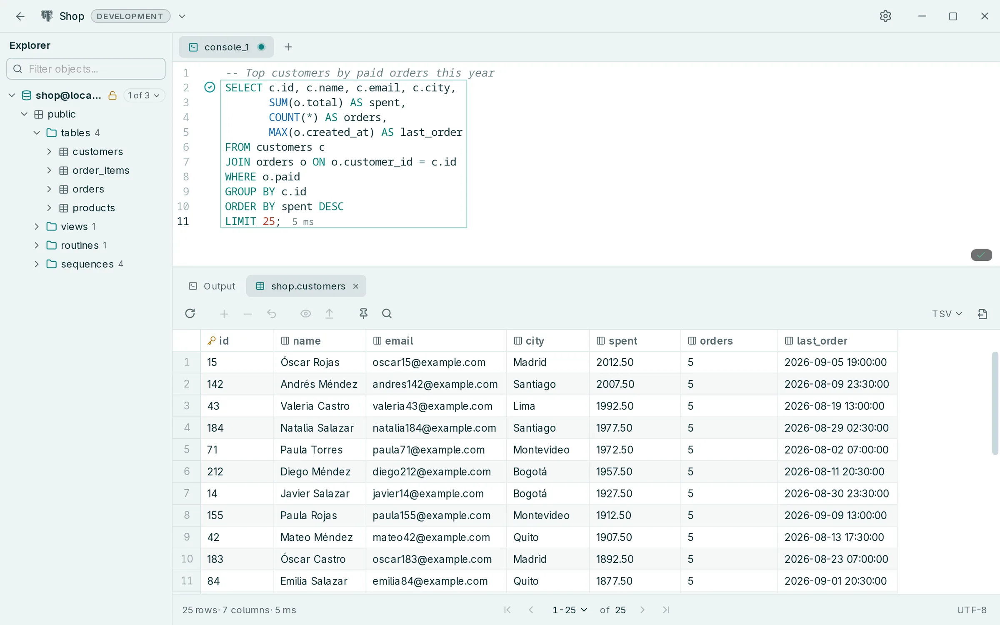
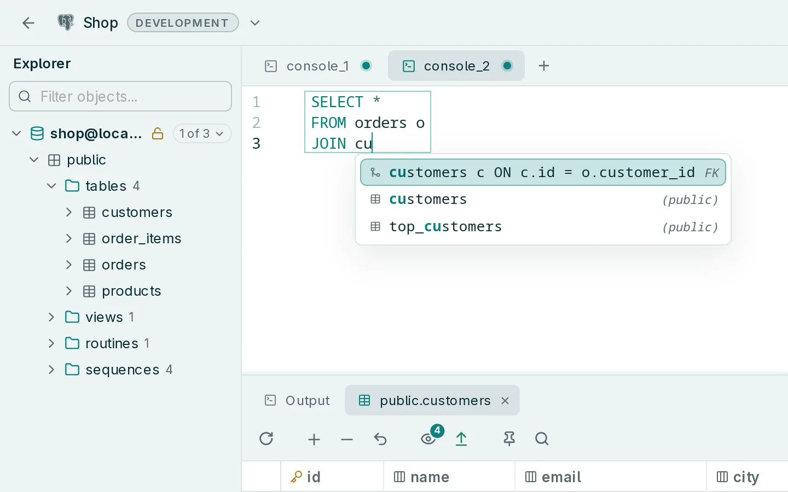
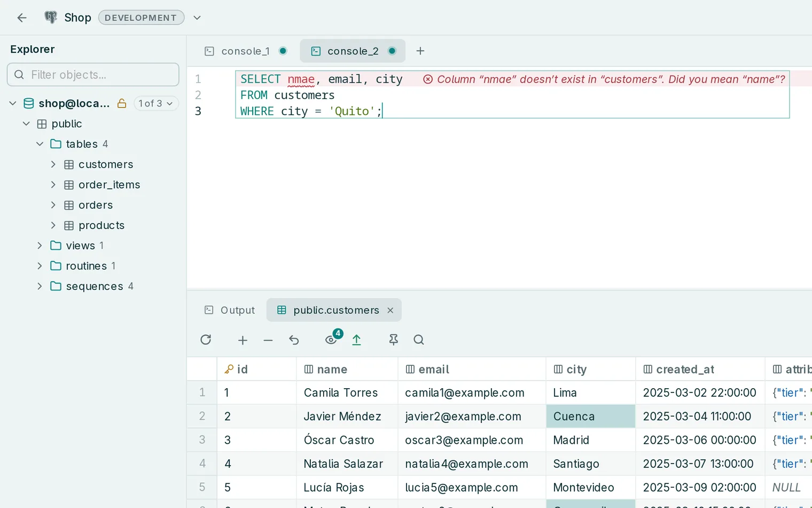
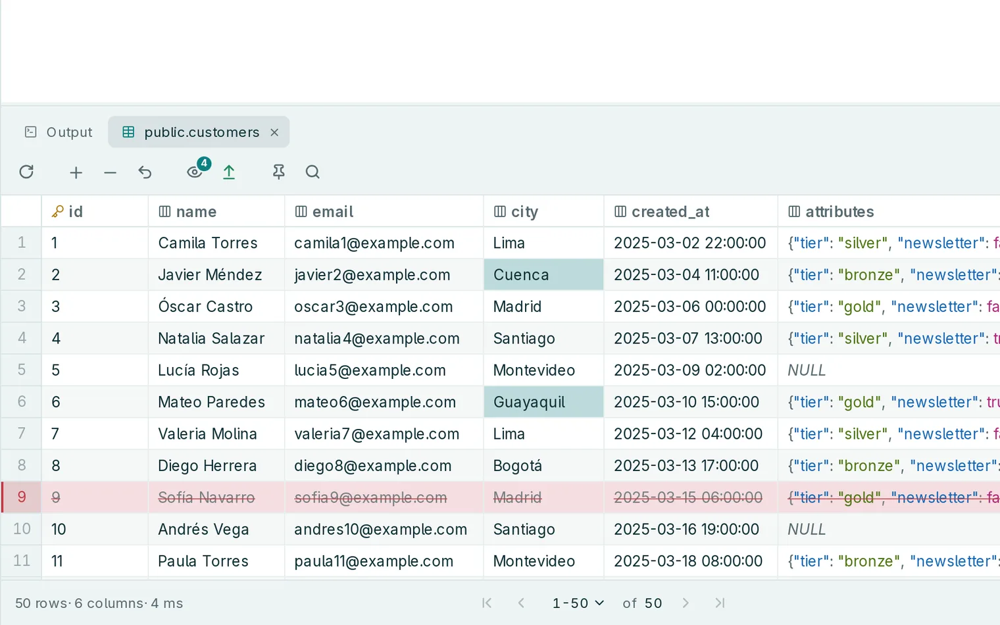
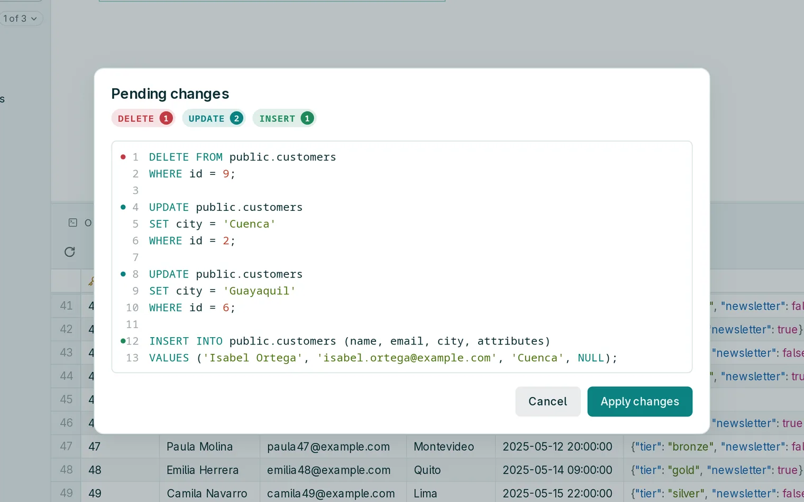

macOS
SugeridoElige según el chip de tu Mac. Lo ves en menú Apple → Acerca de este Mac.
Aún no está notarizada por Apple, así que macOS bloquea la primera apertura. Ve a Ajustes del Sistema → Privacidad y seguridad y elige Abrir igualmente.
Escribe consultas. Edita resultados. Revisa cada cambio antes de aplicarlo.


Tablas, columnas y JOIN completos, a partir de tus claves foráneas.

Las tablas y columnas que no existen se marcan antes de ejecutar nada.

Cambia celdas, agrega filas o bórralas en la misma grilla.

Cada cambio pendiente se convierte en el SQL exacto que apruebas.
Versión {{version}} · Novedades · Todos los archivos en GitHub
Elige según el chip de tu Mac. Lo ves en menú Apple → Acerca de este Mac.
Aún no está notarizada por Apple, así que macOS bloquea la primera apertura. Ve a Ajustes del Sistema → Privacidad y seguridad y elige Abrir igualmente.
Windows 10 u 11, de 64 bits.
Aún no tiene firma de código. Si SmartScreen dice «Windows protegió su PC», elige Más información → Ejecutar de todas formas. Si falta WebView2, el instalador lo descarga.
x86_64. Necesita WebKitGTK 4.1, que instala tu gestor de paquetes.
.deb.rpm.pkg.tar.zst.AppImage · sin instalarTodavía no hay versiones para ARM. Las actualizaciones llegan desde la app, no desde tu gestor de paquetes.
curl -LO https://github.com/anderson-andres-dev/rowly-db/releases/download/v{{version}}/Rowly.DB_{{version}}_amd64.deb
sudo apt install ./Rowly.DB_{{version}}_amd64.debapt instala las bibliotecas que necesita.
sudo dnf install https://github.com/anderson-andres-dev/rowly-db/releases/download/v{{version}}/Rowly.DB-{{version}}-1.x86_64.rpmdnf descarga el paquete y sus dependencias.
curl -LO https://github.com/anderson-andres-dev/rowly-db/releases/download/v{{version}}/rowly-db_{{version}}_x86_64.pkg.tar.zst
sudo pacman -U ./rowly-db_{{version}}_x86_64.pkg.tar.zstpacman instala las bibliotecas que necesita.
curl -LO https://github.com/anderson-andres-dev/rowly-db/releases/download/v{{version}}/Rowly.DB_{{version}}_amd64.AppImage
chmod +x Rowly.DB_{{version}}_amd64.AppImage
./Rowly.DB_{{version}}_amd64.AppImageNo hay nada que instalar. Guarda el archivo donde quieras ejecutarlo.
¿Ya la tienes? Las versiones nuevas llegan en Ajustes → Actualizaciones, y los paquetes de actualización van firmados. También puedes compilarla desde el código.